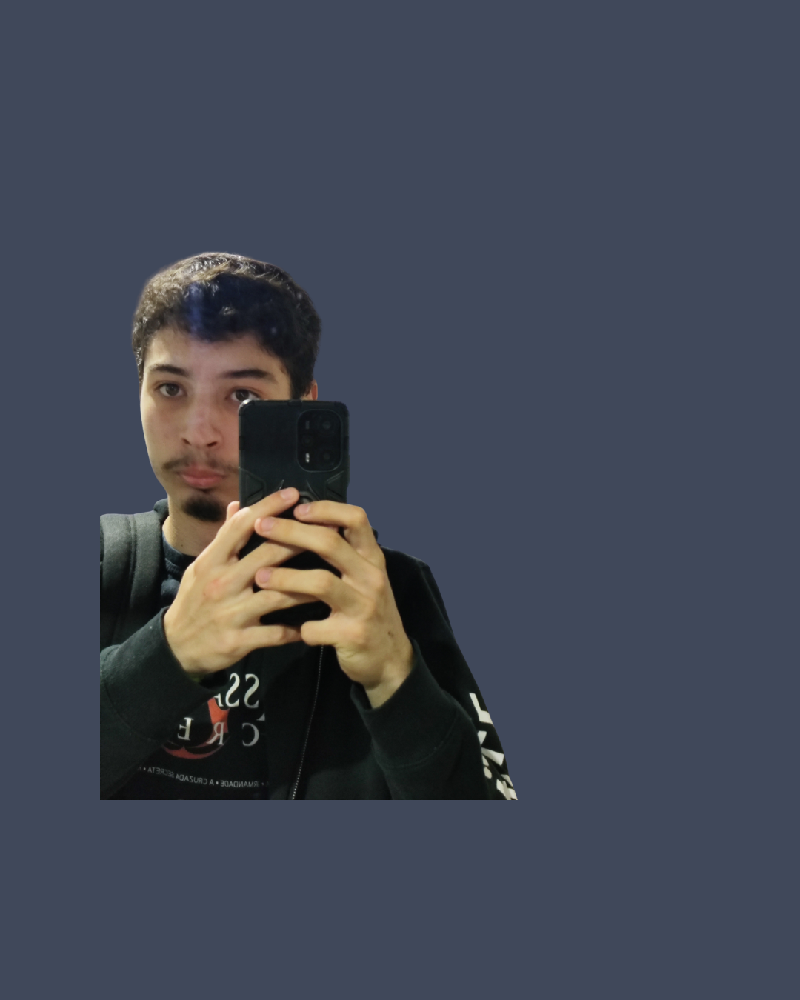

Sobre
Desenvolvedor Front-End em início de carreira, com foco em performance web, arquitetura front-end e experiência do usuário (UX).
Contexto
Minha trajetória começou fora da tecnologia, em ambiente industrial. Essa experiência me ensinou disciplina operacional, trabalho em equipe e resolução de problemas sob pressão — competências que transferi diretamente para o desenvolvimento de software.
Atualmente curso Bacharelado em Ciência da Computação na FAM (Faculdade de Americana), onde aprofundo fundamentos teóricos enquanto aplico conhecimento prático em projetos autorais.
Foco Técnico
Meu trabalho prioriza três pilares:
- Performance Web: Otimização de carregamento, animações a 60fps, Core Web Vitals e técnicas de lazy loading.
- Arquitetura Front-End: Separação de responsabilidades, organização de código escalável e decisões conscientes sobre stack.
- UX-Oriented Development: Interfaces que priorizam clareza, acessibilidade e intenção sobre decoração.
Stack & Ferramentas
Core
- HTML5 Semântico
- CSS3 (Vanilla & Metodologias)
- JavaScript (ES6+)
- TypeScript
Frameworks & Libs
- React
- Next.js (SSG/SSR)
- Canvas API
Ferramentas
- Git & GitHub
- Lighthouse & DevTools
- Figma (básico)
Conceitos
- Design Responsivo
- Acessibilidade (WCAG)
- SEO Técnico
- Web Performance
Posicionamento Profissional
Busco uma posição júnior com ambiente técnico que valorize decisões conscientes, revisão de código e aprendizado real.
Não procuro apenas "fazer tarefas" — procuro entender o porquê por trás de cada decisão, contribuir com soluções pensadas e crescer em um time que priorize qualidade sobre velocidade cega.
Idiomas
- Português: Nativo
- Inglês: Intermediário (leitura técnica fluente, comunicação escrita)
Quer saber mais sobre como trabalho?
Ver Meu Processo